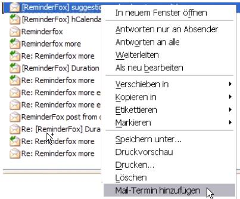
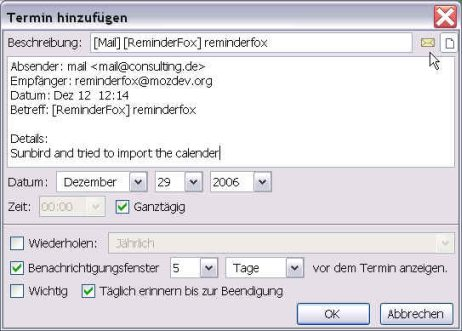
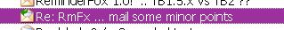
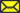
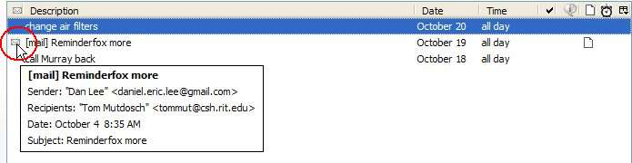
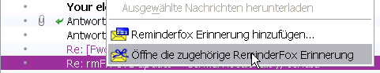
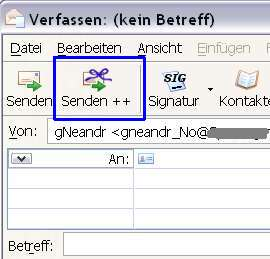
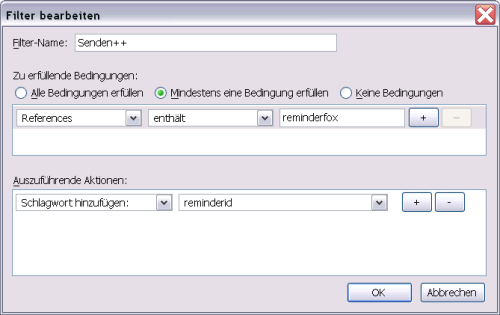
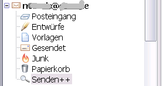
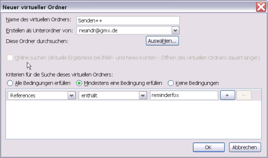

Für die Mozilla basierende Mailanwendungen (Thunderbird, SeaMonkey, Postbox) bietet Reminderfox verschiedene Möglichkeiten die Erinnerungsfunktionen zu nutzen:
- um an eine beliebige Nachricht in den Mail-Ordnern zu erinnern
- für eine Mail-Vorgangsverfolgung
- Erinnerungen für Einträge im Adressbuch zu erstellen
Erinnerungen für Nachrichten
Für jedes Mail in den Mail-Ordnern bietet Reminderfox die Möglichkeit, eine Erinnerung anzulegen. So kann z.B. für ein wichtiges E-Mail ein Termin gesetzt werden, um es zu einem späteren Zeitpunkt wieder zu bearbeiten (Wiedervorlage).

Um einen Termin für ein E-Mail anzulegen, wird einfach auf der E-Mail Liste mit einem rechte-Maus-Klick das Kontextmenü aufgerufen.
Dieser Aufruf ist auch innerhalb eines geöffneten E-Mails möglich.
Das Fenster 'Termin hinzufügen' wird bereits mit einigen Informationen des E-Mails geöffnet:

Zusätzlich kann Text im E-Mail markiert werden, um diesen beim Anlegen des Termins in das Notizfenster als "Details" zu übernehmen. Hiermit können Daten, Hinweise oder Verabredungen etc. direkt in den Termin übernommen werden.
Nachdem die Erinnerung mit den vorstehend beschriebenen Funktionen angelegt wurde, wird dies auch in dem Mail Ordner deutlich, das E-Mails ist farbig und mit dem Schlagwort ('Tag') Reminderfox markiert:

Wird in Reminderfox die Erinnerung gelöscht oder als erledigt gekennzeichnet, wird die Kennzeichnung des Mails zurückgesetzt
Öffnen eines E-Mails für eine Reminderfox Erinnerung
In der Reminderfox Liste oder angezeigten Benachrichtigungen wird ein E-Mail Icon  angezeigt wenn für die Erinnerung ein zugehöriges E-Mail exsistiert.

Durch Doppelklick auf das Symbol wird das E-Mail aufgerufen und in einem neuen Tabulator bzw. neuem Fenster angezeigt. Der Aufruf des E-Mail ist sogar möglich, wenn es zwischenzeitlich in einen anderen Ordner verschoben wurde, z.B. vom Eingangskorb in den Ordner 'Ablage'. Beim beschriebenen Aufruf des E-Mail wird der Ordner geöffnet, in dem das Mail gespeichert ist.
Anzeige einer Erinnerung für ein E-Mail
Wurde für ein E-Mail eine Reminderfox Erinnerung angelegt (das E-Mail ist farblich und mit Reminderfox gekennzeichnet), ermöglicht ein Kontextmenüpunkt die zugehörige Erinnerung direkt zu öffnen:

Hinweis: Der Menüpunkt ist nur aktiv, wenn eine zugehörige Erinnerung in der eigenen Reminderfox Liste enthalten ist.
Mail-Vorgangsverfolgung
Reminderfox ermöglicht eine einfache Vorgangskontrolle mit E-Mails. Hierbei wird sowohl eine Erinnerung in der Reminderfox Liste angelegt, als auch das zu versendende Mail automatisch mit einer Referenz versehen. Dies verknüpft das gesandte E-Mail mit einer Erinnerung. Für eine eingehende E-Mail Antwort kann dann ggf. direkt die Reminderfox Erinnerung zur weiteren Bearbeitung geöffnet werden.Dies setzt allerdings voraus, das die Antwort mit der Funktion "Antworten" erstellt wurde.
Mail senden und Termin anlegen
Zunächst wird ein E-Mail verfasst -- wie üblich durch Aufruf des Fensters "Verfassen: ..." oder durch Öffnen einer Vorlage oder eines Entwurfes.
Für das Senden wird jedoch das zusätzliche Symbol  [Senden ++] auf der Symbolleiste des Fensters [Verfassen: ...] genutzt.
[Senden ++] auf der Symbolleiste des Fensters [Verfassen: ...] genutzt.

[Senden ++] entspricht dem normalen "Senden", vor dem eigentlichen Senden wird jedoch eine Reminderfox Erinnerung angelegt.
Beim Aufrufen wird ein Reminderfox Fenster "Termin hinzufügen" geöffnet, es enthält bereits verschiedene Mail-Informationen wie den "Betreff", Versandinformationen (Absender, Empfänger, Datum) und ggf. die eingestellte "Wichtigkeit" des Mails.
Wird die Bearbeitung des Termins mit [OK] abgeschlossen, erfolgt der Versand und die Speicherung der Erinnerung, gekennzeichnet mit [Senden++].
Außerdem wird die Kopie der gesendeten Nachricht in den Ordner "Gesendet" mit einem Bezug auf die Reminderfox Erinnerung gespeichert. Für die gespeicherte Kopie auch wird ein Kontextmenüpunkt zum direkten Öffnen der Reminderfox Erinnerung aktiviert: Anzeigen einer Erinnerung für ein E-Mail
Hinweise:
- Die Menüschaltfläche ist ggf. auf der Symbolleiste des Dialogs [Verfassen ..] zu installieren.
- Die [Senden ++] Funktion ist mit anderen, besonderen Sendefunktionen nicht kompatibel (z.B. Enigmail oder Attachment_reminder)
- Um Senden++ einfach und konsistent zu nutzen wird empfohlen:
- Für E-Mail Konten, die 'Senden++' nutzen, sollte der Ordner 'Gesendet' der Kopien der gesendeten Nachrichten enthält auf die 'Lokalen Ordner' (Local Folders) gelegt werden. Diese Einstellung erfolgt über die 'Konten Einstellungen'. Dort das Konto und den Abschnitt 'Kopien & Ordner' auswählen. Im ersten Abschnitt "Beim Senden von Nachrichten automatisch" den Punkt 'Anderer Ordner' auswählen. Mit dem nebenstehenden Menü auswählen 'Lokale Ordner' und 'Gesendet'
- Wenn 'Senden++' genutzt wird, sollte die ReminderFox Liste geschlossen sein. Ist sie offen, so wird die erzeugte Erinnerung zunächst kein 'E-Mail' Icon haben. Im Ordner 'Gesendet' hat die Kopie der gesendeten Nachricht das Schlagwort (Tag) "ReminderFox" **\. In der Liste der Nachrichten mit dem rechten Mauszeiger auf die Nachrichten wird das Kontext Menü mit dem Punkt [Öffne die zugehörige ReminderFox-Erinnerung] gezeigt. Wird die Erinnerung hierüber geöffnet, erhält sie das E-Mail Icon. [OK] schließt den Dialog und fügt die geänderte Erinnerung der Liste zu. Beim nächsten Öffnen der ReminderFox Liste hat diese Erinnerung das E-Mail Icon, es ist der Aufruf der zugehörigen Nachricht möglich. **\ Für IMAP Konten mit dem 'Gesendet' Ordner auf dem IMAP Konto wird das Schlagwort "ReminderFox" erst wie vorstehend beschrieben hinzugefügt.
Antwort auf Mails, die mit [Senden++] verschickt wurden
Wenn der Empfänger des Mails, das mit [Senden ++] versendet wurde, die Funktion "Antworten" benutzt, bleibt die Referenz zu dem angelegten Reminderfox Termin erhalten. So ist eine leichte Verbindung zwischen der Antwort und dem Eintrag in der Reminderfox Liste möglich. Auch hier wird bei geöffnetem Mail oder mit der markierten Zeile der Mailliste das o.g. Kontextmenü Öffne die zugehörige Reminderfox Erinnerung aktiviert und ermöglicht das direkte Öffnen.
Filter und Suchordner
Die [Senden++] Funktion versieht die gesendete Nachricht mit einem Referenzelement im sog. Mailkopf. Dies Element kann genutzt werden, um mit den Thunderbird Funktionen "Filtern" und "Suchordner" Nachrichten die mit [Senden++] bearbeitet wurden hervorzuheben.
Filter
Über das Hauptmenü mittels "Extras" --> "Filter.." wird die Bedingung und die auszuführende Aktion eingegeben: Es wird in den "References" nach 'Reminderfox' gesucht. Ist dies vorhanden, wird das "Schlagwort" 'Reminderfox' hinzugefügt.

Hinweise:
- Das Bedingungselement "References" ist ggf. mittels des Punktes [Anpassen ..] hinzuzufügen.
- Für "References" ist 'Reminderfox' zwingend, während als Schlagwort ein beliebiges Element aus der Liste gewählt werden kann.
Suchordner
Für die einzelnen Mail-Accounts können 'Suchordner' angelegt werden. Diese zeigen jedes eingehende Mail mit einem "References" Eintrag 'Reminderfox' unmittelbar an.

Ein Suchordner wird angelegt im Hauptmenü mittels "Bearbeiten" --> "Suchen" --> "Nachrichten suchen..". Dort über die Schaltfläche "Als virtuellen Ordner speichern ..." die Bedingungen usw. eingeben:

Hinweise: - Auch hier ist für "References" der Eintrag 'Reminderfox' zwingend. - Für IMAP Accounts kann die optionale Online-Suche aktiviert werden. Das Hinzufügen des Schlagwortes erfolgt nur beim Empfangen der Nachricht, nicht aber nachträglich!